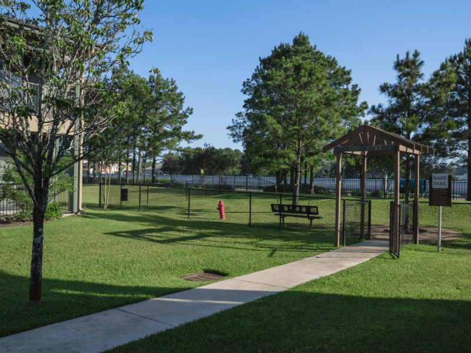

Indoor Dog Parks in Texas
Beat the Texas heat and weather with premium indoor dog parks across the Lone Star State. Climate-controlled facilities, professional supervision, and year-round fun for your furry friend.

Beat the Texas heat and weather with premium indoor dog parks across the Lone Star State. Climate-controlled facilities, professional supervision, and year-round fun for your furry friend.
Texas weather can be unpredictable and extreme. Indoor dog parks provide a safe, comfortable environment for your dog to play, socialize, and exercise regardless of outdoor conditions.
Escape the Texas heat and humidity with air-conditioned facilities that keep your dog comfortable year-round.
Rain, storms, or extreme temperatures won't interrupt your dog's playtime and exercise routine.
Trained staff monitor play sessions to ensure safe socialization and immediate assistance when needed.
Many facilities offer daycare, training, grooming, and boarding services all under one roof.

Find climate-controlled dog parks in major Texas metropolitan areas

15+ indoor facilities in the Greater Houston area including Spring, The Woodlands, and Cypress.

Unique facilities including coworking spaces and premium training centers in the capital city.

Extensive network of indoor facilities across the DFW metroplex with premium amenities.

Climate-controlled facilities throughout the Alamo City with specialized services and training.
Top-rated climate-controlled facilities across Texas
Interactive map showing all indoor dog park locations across Texas
🗺️ Interactive Map Loading...
Map will display all indoor dog park locations with clickable markers
Make the most of your indoor dog park experience with these helpful tips
What to bring and expect on your first indoor dog park visit. Vaccination requirements, registration process, and facility tours.
Guidelines for safe and enjoyable indoor play sessions. Learn about facility rules, interaction protocols, and staff assistance.
How to get the most value from indoor dog park memberships. Services, schedules, and additional amenities available.